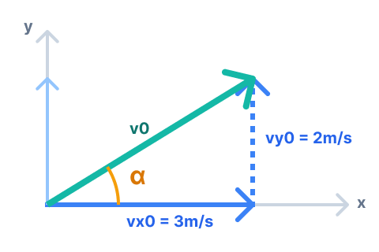
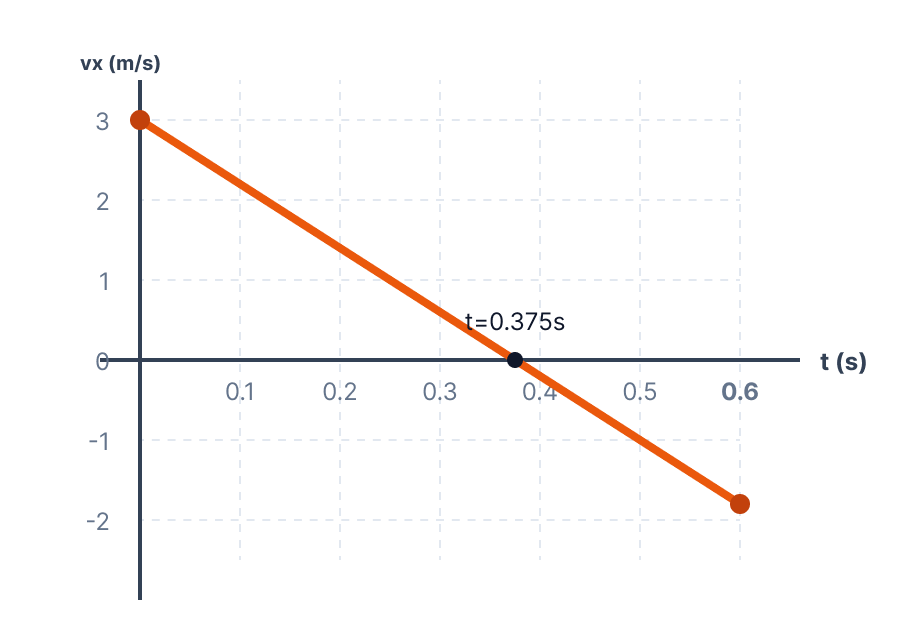

הקדמה: פענוח מערכת הצירים מתוך הגרף
לפני שניגש לחישובים, עלינו להבין מהי מערכת הצירים שהשאלה הכתיבה לנו. נתבונן בגרף ב' (גרף המהירות האנכית כפונקציה של הזמן). אנו יודעים ששיפוע של גרף מהירות-זמן מייצג את התאוצה. בגרף זה, השיפוע הוא בבירור שלילי.
הכוח היחיד הפועל על הגוף בציר האנכי הוא כוח הכבידה, הפועל תמיד כלפי מטה. מכיוון שהתאוצה שקיבלנו מהגרף היא שלילית (\( a_y < 0 \)), הדרך היחידה להסביר זאת היא שהכיוון החיובי של ציר ה-\( y \) נקבע מראש כלפי מעלה. כלומר, לא אנחנו בחרנו את הכיוון - הנתונים חייבו אותנו לעבוד עם ציר \( y \) שפונה מעלה! לכן, תאוצת הכובד תהיה \( a_y = -10 \text{ m/s}^2 \). בציר האופקי (\( x \)), בהיעדר כוחות (בסעיפים א'-ד'), התאוצה היא \( a_x = 0 \) ונקבע את הכיוון החיובי ימינה.
א כיוון המהירות ההתחלתית
- מתוך גרף ב' (מהירות בציר ה-\( y \) כפונקציה של הזמן): ברגע הזריקה \( t = 0 \), רכיב המהירות האנכי הוא \( v_{y0} = 2 \text{ m/s} \) (ערך חיובי).
- המהירות ההתחלתית מורכבת מרכיב אופקי ורכיב אנכי.
- כפי שהסקנו בהקדמה, הכיוון החיובי של ציר ה-\( y \) מוגדר כלפי מעלה.
לקבוע האם כיוון המהירות ההתחלתית הוא מעל האופק או מתחת לאופק, ולנמק.
אנו רואים בגרף ב' כי ברגע \( t=0 \) מתקיים \( v_{y0} > 0 \). כיוון שציר ה-\( y \) מוגדר כלפי מעלה (כפי שהוכח מהתאוצה השלילית בגרף), המשמעות היא שהרכיב האנכי של המהירות מכוון גם הוא כלפי מעלה.
מכיוון שהכדור נזרק עם רכיב מהירות אופקי ורכיב מהירות אנכי המכוון מעלה, וקטור המהירות הכולל מצביע לכיוון הנמצא מעל לציר האופקי.
ב מציאת המהירות ההתחלתית (גודל וכיוון)
- מתוך גרף א': רכיב המהירות האופקית קבוע ושווה ל- \( v_{x0} = 3 \text{ m/s} \).
- מתוך גרף ב': רכיב המהירות האנכית ההתחלתית הוא \( v_{y0} = 2 \text{ m/s} \).
את הגודל של וקטור המהירות ההתחלתית \( |\vec{v}_0| \) ואת כיוונו (הזווית \( \alpha \) ביחס לאופק).

כפי שניתן לראות בסקיצה, וקטור המהירות ההתחלתית נוצר מחיבור של שני רכיבים הניצבים זה לזה. כדי למצוא את גודל הווקטור (היתר במשולש), נשתמש במשפט פיתגורס:
כדי למצוא את הכיוון (הזווית \( \alpha \) מעל האופק), נשתמש בפונקציית הטנגנס (ניצב מול חלקי ניצב ליד):
ג חישוב גובה הזריקה
- רגע הפגיעה בקרקע הוא \( t = 0.6 \text{ s} \).
- המהירות ההתחלתית בציר \( y \) היא \( v_{y0} = 2 \text{ m/s} \).
- נקבע את גובה הקרקע להיות \( y = 0 \text{ m} \).
- תאוצת הכדור בציר \( y \) היא \( a_y = -10 \text{ m/s}^2 \) (כוח הכבידה פועל נגד ציר ה-\( y \) החיובי שנקבע מעלה).
את הגובה ההתחלתי של הכדור מעל הקרקע, כלומר את מיקומו ההתחלתי בציר ה-\( y \), המסומן כ- \( y_0 \).
נציב את הנתונים בנוסחת המקום-זמן עבור רגע הפגיעה בקרקע (\( t = 0.6 \text{ s} \), \( y(0.6) = 0 \)):
ד אנרגיה קינטית בשיא המסלול
- מסת הכדור היא \( m = 0.25 \text{ kg} \).
- המהירות האופקית קבועה ולכן בשיא המסלול \( v_x = 3 \text{ m/s} \).
- מידע קריטי: בנקודת שיא המסלול, מהירות הגוף בציר ה-\( y \) מתאפסת זמנית, כלומר \( v_y = 0 \text{ m/s} \).
נמצא תחילה את גודל המהירות הכוללת של הגוף בשיא הגובה. כיוון ש- \( v_y = 0 \), המהירות הכוללת שווה רק לרכיב האופקי:
כעת נציב את המסה והמהירות בנוסחת האנרגיה הקינטית:
ה תנועה תחת השפעת כוח אופקי
- פועל כוח אופקי קבוע בגודל \( F = 2 \text{ N} \) בכיוון מנוגד לכיוון התנועה. נציב כ- \( F_x = -2 \text{ N} \).
- זמן הנפילה בציר האנכי נשאר ללא שינוי: \( t = 0.6 \text{ s} \).
ראשית, נפעיל את החוק השני של ניוטון בציר האופקי (\( x \)):
כעת נשתמש בנוסחת המהירות כתלות בזמן לחישוב שתי נקודות קצה עבור הגרף:
